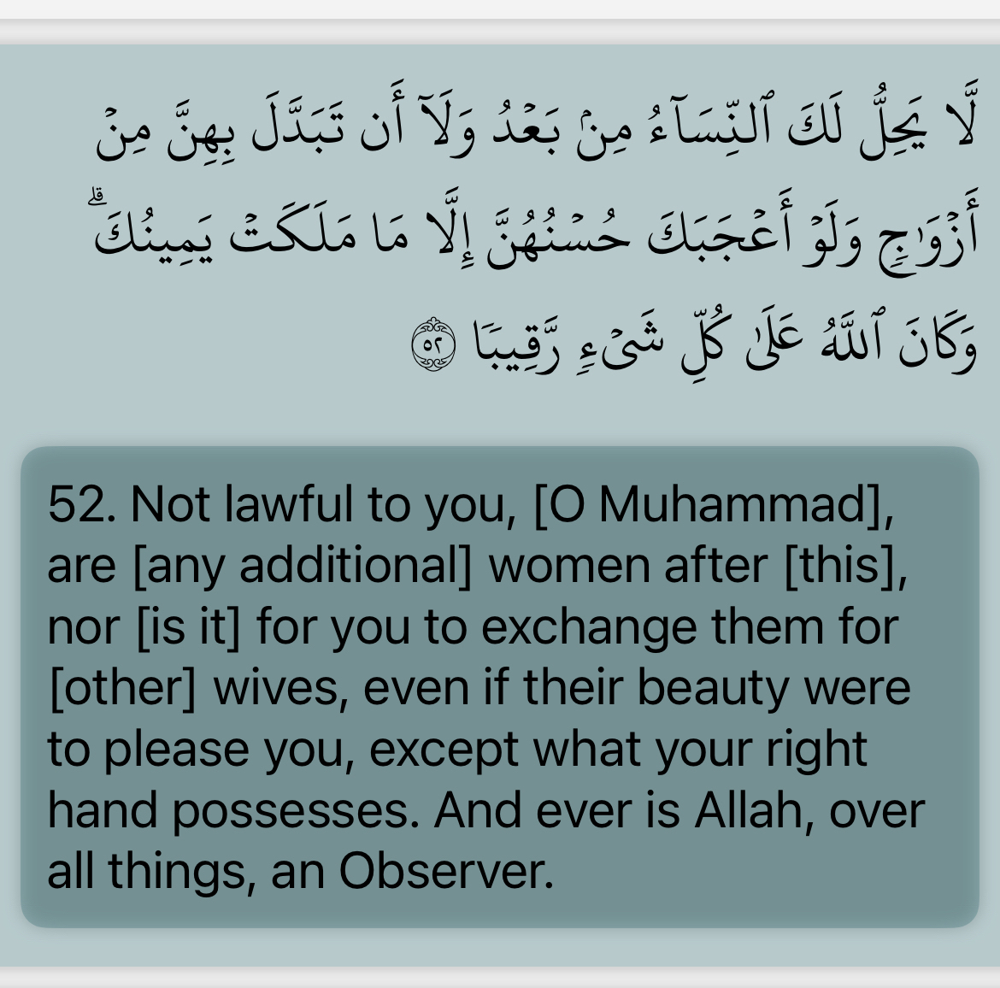
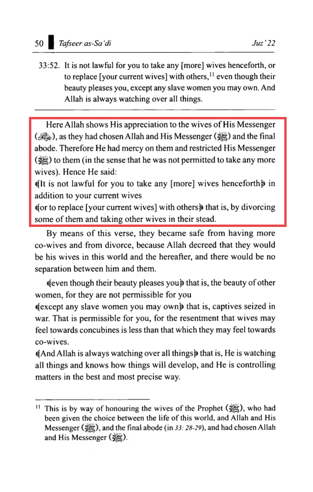
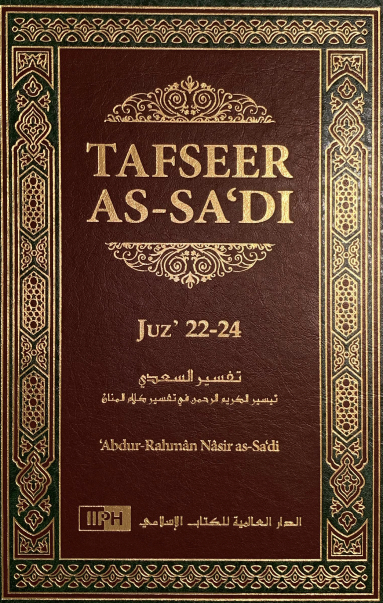

This was revealed concerning this about the number of the wives of the prophet, Prophets have higher order than us and he married more for many reasons, Also ibn kathir states that 4:3 was revealed after the prophet got 9 wives —yehia



https://www.instagram.com/tv/CaID0ENlkqe/?igshid=NDk5N2NlZjQ=
Why did the prophet have 11 wifes when we are only allowed 4
Some people may see this as a privilege to the Prophet (peace be upon him). However, with privileges did come restrictions as well.
There were several differences between the Prophet and the rest of the Muslims regarding obligations and privileges. For example, Qiyam Al Layl (prayers at two thirds of the night) is not compulsory on Muslims; however they were compulsory on the Prophet Muhammad (peace be upon him).
Allah told the Prophet (peace be upon him)...
Surah 17:79
And during a part of the night, pray Tahajjud beyond what is incumbent on you; maybe your Lord will raise you to a position of great glory.
This verse is directly addressed to the Prophet Muhammad (peace be upon him).
Ibn Kathir has it in his commentary on this verse...
(And in some parts of the night (also) offer the Salah with it as an additional prayer for you.) Here Allah commands him (the Prophet ) to offer further prayers at night after the prescribed prayers. It was reported in Sahih Muslim from Abu Hurayrah that when the Messenger of Allah was asked which prayer is best after the prescribed prayers, he said,
(The Night prayer) Allah commanded His Messenger to pray the Night prayer after offering the prescribed prayers, and the term Tahajjud refers to prayer that is offered after sleeping. This was the view of Alqamah, Al-Aswad, Ibrahim An-Nakhai and others. It is also well-known from the Arabic language itself. A number of Hadiths report that the Messenger of Allah used to pray Tahajjud after he had slept. These include reports from Ibn Abbas, A'ishah and other Companions, may Allah be pleased with them. This has been discussed in detail in the appropriate place, praise be to Allah. Al-Hasan Al-Basri said, "This is what comes after `Isha', or it could mean what comes after sleeping.''
(an additional prayer (Nawafil)) means the Night prayer has been made an extra prayer specifically for the Prophet , because all his previous and future sins had been forgiven. But for other members of his Ummah, offering optional prayers may expiate for whatever sins they may commit. This was the view of Mujahid, and it was reported in Al-Musnad from Abu Umamah Al-Bahili.(Tafsir Ibn Kathir,
So here we see an example of God making exceptions to Prophet Muhammad (peace be upon him) in certain situations. If the Prophet (peace be upon him) forged Islam and started giving himself privileges then why did he also force himself to stay up late at night and pray? Does this sound like an individual who is trying to benefit himself?
Back to the issue of the exception of why the Prophet (peace be upon him) was allowed to keep more than four wives. Well there was wisdom behind the marriage to each of the wives of the Prophet (peace be upon him) (Which I will discuss further below in sha allah) Thus for the Prophet peace be upon him to maintain those marriages were essential.
Dr Jamal Badawi said...
It should be noted that the special exception to the prophet concerning the maximum number of wives [Qur'an, 33: 50] includes also special restrictions on him and his wives from privileges available to all others. For example, his wives as "mothers of the believers" were not allowed to remarry after him [Qur'an 33: 53]. If the Prophet were required to divorce wives beyond the maximum of four, it would have done them injustice; to be divorced and disallowed to remarry. Furthermore, for each of the Prophet's marriages there was a specific lesson, social or legislative. By divorcing some of his wives, those lessons are effectively negated, especially the unifying function of marrying women from different clans and backgrounds. This diversity allowed close observation of his private life and teachings and communicating them to their respective folks.
Also, unlike any ordinary Muslim, the Prophet was not allowed to divorce any of his wives and marrying others [33:52]. (Jamal A. Badawi, Marriages of Prophet Muhammad (peace be upon him),
People may ask why the Prophet's wives were not allowed to remarry. Well just think about how much fitna (corruption) would have occurred when people would want to fight over who was going to marry the Prophet's former wives. Also imagine the fitna that might occur when people might begin to idolize children being born from the Prophet's wives just like how Shias today do with the Prophet's grandchildren.
·Strengthening the ties between him and some tribes, in the hope that this would make Islam stronger and help to spread it, because ties of marriage increase the bonds of friendship, love and brotherhood.
·Taking care of some widows and compensating them with something better than what they had lost, because this would bring peace of mind and consolation at times of calamity. It also set a precedent for the ummah of how to show kindness to those whose husbands were killed in jihad and so on.
·Hoping to increase the numbers of offspring, which is in accordance with human inclinations, increasing the numbers of the ummah and supporting it with those who it is hoped will support and spread the religion.
·Increasing the number of female teachers who would convey to the ummah what they had learned from the Messenger of Allah (blessings and peace of Allah be upon him) and what they knew of his private life.
The motive for him having more than one wife was not mere desire, because it is proven that the Prophet (blessings and peace of Allah be upon him) did not marry any virgin or young woman apart from ‘Aa’ishah (may Allah be pleased with her). The rest of his wives were previously married women.
If he had been controlled by his desires and that is what had motivated him to have many wives, he would have chosen young virgins in order to fulfil his desires, especially after he migrated and began to engage in jihad, and the Islamic state was established and the Muslims grew stronger and more numerous, in addition to the fact that every family would have welcomed ties through marriage with him. But he did not do that; rather he married for noble and sublime reasons, which are clear to anyone who studies the circumstances of his marriage to each of his wives.
Moreover, if he had been a man driven by desires, that would have been known from his life during the days when he was young and strong, at which time he had only one wife, Khadeejah bint Khuwaylid, who was older than him. (If he had been a man driven by desires), he would also have been known to show favouritism and be unfair in dividing his time among his wives, who varied in their ages and degree of beauty.
But he is known only to have been completely chaste and honourable in his conduct, both in his youth and when he grew older, which is indicative of his complete decency and sublime character, and his upright nature in all his affairs. In fact he was well-known for that even among his enemies.
And Allah is the source of strength.
O Prophet! We have made lawful for you your wives to whom you have paid their ˹full˺ dowries as well as those ˹bondwomen˺ in your possession, whom Allah has granted you.1 And ˹you are allowed to marry˺ the daughters of your paternal uncles and aunts, and the daughters of your maternal uncles and aunts, who have emigrated like you. Also ˹allowed for marriage is˺ a believing woman who offers herself to the Prophet ˹without dowry˺ if he is interested in marrying her—˹this is˺ exclusively for you, not for the rest of the believers. (Quran 33:50)